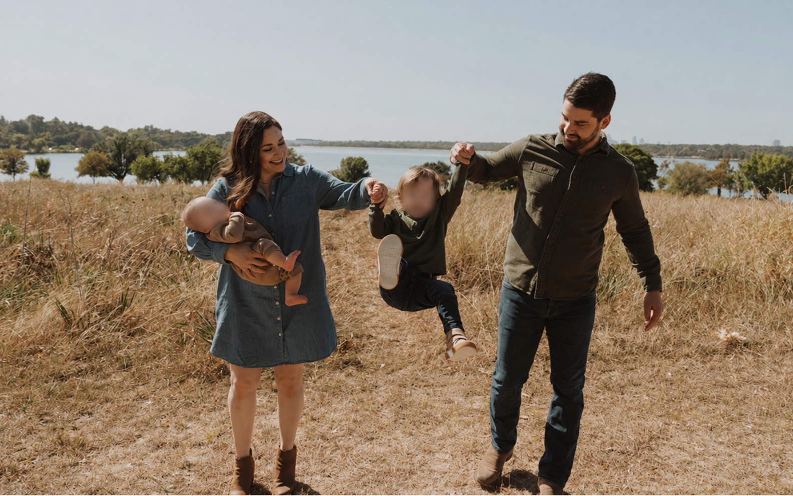

My story
Why I Build.
I’m Steve DiSibio—a husband, dad to two boys, and woodworker in Texas. I started by learning to use tools. Wood & Working is where I share the furniture I build and the progress I make along the way.

01 · Getting started
A son on the way.
A bookcase to build.
When we were getting ready to have our first son, who’s now four, I started thinking about the things I wanted to teach him. Using tools was one of them.
I also wanted a bookcase for my office. So, naturally, I bought a table saw and a few other tools and started learning.
I didn’t know much. I had something I wanted to make, and that gave me a reason to figure it out.
02 · The early builds
Pine, practice,
and figuring it out.
My early projects were mostly about making something useful and learning how to put it together. I didn’t really know what I was doing yet.
I built a pine C-table for my favorite chair and a blanket chest for the foot of our bed. They still have a place in our home, even as I’ve learned better ways to build.
Looking back at those pieces makes the progress easier to see. My designs, joinery, and finishing have all improved because I kept making things.

03 · Learning from others
A lot of YouTube.
Steve Ramsey, Bent’s Woodworking, and 731 Woodworks helped me get started. I watched their videos, tried what I learned, and kept coming back with more questions.
Bourbon Moth, Jon Peters, Keith Johnson, Michael Alm, Mike Farrington, Northeast Woodworks, Timber Biscuits, and plenty of others showed me what I wanted to work toward.
Some helped me understand how to do the work. Others made me want to get better at it.
04 · Seeing the progress
Two builds that changed things.
The white oak nightstands were the first project where I stepped back and was impressed with what I’d made. They challenged me, and I could see how much my skills had improved.
The hall tree was my biggest project. When I finished it, I started thinking I could actually do something with this skill.
That’s what got this started: building more, sharing the process, and seeing where it could go.
See the builds ↗

05 · Why Wood & Working
It’s becoming
more than a hobby.
I created Wood & Working to share that progression. I want to build furniture that makes someone think, “I’d like to make something like that,” and show what it took to get there.
For a long time, woodworking was something I squeezed in around a full-time job and family life. Increasingly, it feels like real work—in a good way. I put more thought into the design, care more about the details, and want to see how far I can take it.
I’m still learning. The point of sharing is to tell the story of each build: what I tried, what went wrong, and what I’ll do better next time.
06 · What I’m building now
Furniture for our home.
Then a little further.
Much of what I make is for the home we bought six years ago. Almost every room now has a piece of furniture I built.
I’m starting to build out my workshop, but the work I most want to do is finer furniture in walnut, white oak, cherry, and maple.
You’ll see a mix here: cabinetry, hardwood furniture, painted furniture, and whatever else we need. Soon, I plan to take on more projects for family, friends, and clients.
I also want to get better at telling the story of each build as I go—the decisions, the problems, and what I learn along the way.

07 · Bringing work into the workshop
Software experience.
Shop problems.
I’ve worked in software for more than 12 years. My experience using AI at work has started to carry over into woodworking, too.
I’m not a designer, and I don’t use SketchUp or CAD. I use ChatGPT, Claude, and other tools to help me work through concepts, designs, and cut lists when I need them.
It’s become part of how I plan a project and figure out the next step.
Follow the next build.
I’m learning as I go. If you want to see what I make next, come along.